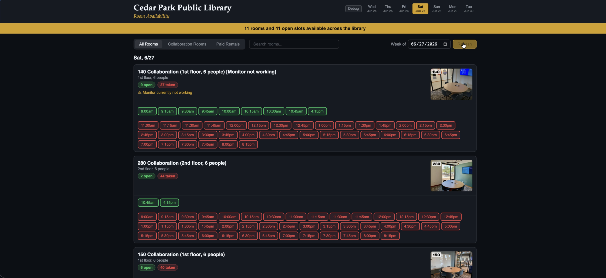

~/ Technical Projects & Systems
Library Resource Automator
Engineered an automation utility that headlessly parses a local library database to isolate and display open study room allocations, eliminating manual scheduling friction.
▶ View Application Screenshot

 Python
Python
 Playwright
Playwright
Minimalist Weather Utility
Designed and compiled a lightweight cross-platform mobile utility that interfaces with public REST APIs to fetch real-time atmospheric data into an adaptive, telemetry-free UI.
▶ View Demo Video
 Flutter
Flutter
 Dart
Dart
Bare-Metal Systems Lab
Deployed an enterprise virtualization hypervisor to optimize hardware bounds. Repurposed deprecated consumer computers into redundant NAS nodes.
▶ View System Topology

 Proxmox
VE
NAS
Proxmox
VE
NAS
Minecraft Server Cluster
Orchestrated high-concurrency dedicated Minecraft server clusters. Implemented extensive JVM tuning for optimal performance and minimal player latency.
 Java
JVM Tuning
Java
JVM Tuning
 Linux
Linux